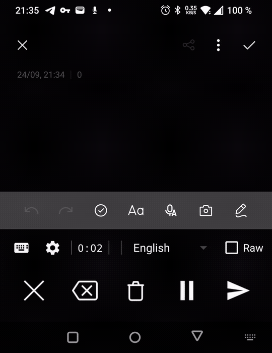

What it is
Polished Recognition is a voice keyboard. Switch to it, speak, and it transcribes your audio with a speech-to-text (STT) provider — then optionally cleans up, reformats, or translates the text with a language model (LLM) before inserting it into whatever app you were typing in.
You bring your own API key (or run a local model). There is no account and no central server: your audio goes only to the provider you configured — or nowhere at all if you run a local model.
It works as a normal on-screen keyboard, and it also answers the system voice input that keyboards like HeliBoard, Fossify, OpenBoard and the AOSP keyboard delegate to.
Quick start
- Install from F-Droid (recommended) or the Play Store (closed testing).
- Configure a provider in the app's Settings: pick an STT provider (e.g. Groq), paste your API token, tap Validate & Fetch Models, and choose a Whisper model. An LLM provider is optional.
- Enable the keyboard: Settings → System → Languages & input → On-screen keyboard → turn on Polished Recognition.
- Use it: in any text field, switch to the Polished keyboard — recording starts instantly. Speak, then tap Send.
Full step-by-step setup, including the device-specific paths and the system voice-input option, is in the Installation Guide.
Understanding the keyboard
The recorder is a compact two-row bar. The key to it is that every button does one thing when you tap it and, for some buttons, something else when you press and hold it. Try it below — tap a button, or press and hold it.

Dictating with filler words → tap Send → polished text appears.
Dictating
Pause & resume
Need a moment to think, or an interruption? Tap Pause. Everything you have recorded so far is kept; tap again to resume and keep going. You can even switch to your normal typing keyboard and back — the dictation stays paused and continues when you return.
Raw mode
With no target language set, the LLM still polishes your dictation (punctuation, structure, filler words). Flip Raw to skip the LLM entirely and insert the plain transcription — zero extra latency.
Choosing your words
Everything lands in the app you were typing in. There is no third app to copy from — the text is inserted at your cursor, spaced correctly so words never glue onto the surrounding text.
Language & prompts
- Target language — pick one and your dictation is translated on the way in. The list accepts any language name; long-press the language field to add or edit your own.
- Prompts — the system prompt is fully editable, with variables for the source and target language. Make the LLM format markdown, translate, or just fix punctuation. Reset individually or all at once.
- Per-app line wrapping — the finished text is wrapped to a width you choose (default 80). You can override it per app you have dictated into.
Troubleshooting
| Problem | Fix |
|---|---|
| Nothing is recorded / no audio | Check that the microphone permission is granted — the app asks on first use. See Settings → Apps → Polished Recognition → Permissions. |
| Model list is empty | Enter a valid API token and tap Validate & Fetch Models. Some providers only allow free-text model entry. |
| Gboard's mic doesn't start it | By design — Gboard hardcodes Google's own voice typing. Switch to the AOSP keyboard (LineageOS), HeliBoard, Fossify, or OpenBoard. |
| Polished isn't listed under Voice input | Available on Android 12+. If the menu is hidden, set it via ADB — see below. |
ADB commands
Most users never need ADB. These help when an icon is hidden, the system voice-input menu is missing, or you want to report a bug.
# Open the app's Settings screen
adb shell am start -n "com.georgernstgraf.polishedrecognition/com.georgernstgraf.polishedrecognition.ui.SettingsActivity"
# Set Polished as the system voice input (Android 12+)
adb shell settings put secure voice_recognition_service com.georgernstgraf.polishedrecognition/com.georgernstgraf.polishedrecognition.service.PolishedRecognitionService
# Verify it
adb shell settings get secure voice_recognition_service
# Pull the on-device logs for a bug report
adb pull /sdcard/Android/data/com.georgernstgraf.polishedrecognition/files/logs/ .On Oplus ROMs (OnePlus/OPPO/Realme) writes to secure settings are blocked — use the on-device Settings screens there. See the Installation Guide for the full reference.
Links
- F-Droid
- Play Store (closed testing)
- GitHub — report bugs and ideas as issues
- Installation Guide